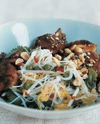

Warm chicken teriyaki salad

Description
Warm tender chicken coated in sweet teriyaki goodness, smooth and silky rice vermicelli, crisp shredded gem lettuce,
Ingredients
- 2 Tablespoons of sake
- 2 Tablespoons of mirin
- 2 Tablespoons of soy sauce
- 1 Teaspoon of light brown sugar
- 3cm Piece of ginger root, peeled and grated
- 2 Galic cloves, peeled and finely chopped
- 200g Dark chicken meat (leg or thigh), roughly chopped
- 100g Rice vermicelli
- 2 Teaspoons toasted sesame oil
- 1 Tablespoon of vegetable oil
- 2 Handfuls of beansprouts
- 1 Head little gem lettuce, leaves separated and shredded
- 1 Red chill, deseeded and finely chopped
- 4 Tablespoons of frozen peas, defrosted
- Bunch of coriander, leaves picked
- Salt and white pepper
- 1 Tablespoon of coarsely chopped salted peanuts
Steps
- Combine the marinade ingredients and gently heat to dissolve the sugar
- Allow to cool completely then combine with the chicken
- Set aside for 1 hour; over night in the fridge is even better
- Cook the vermicelli according to the instructions on the packet, drain and refresh under cold water
- Toss with the sesame oil
- Heat the oil in a hot wok over a medium heat
- Add the chicken and its marinade
- Cook for about four minutes until the meat is done and the liquid is reduced and thickened
- Remove from the heat
- Combine the noodles with the beansprouts, lettuce, cilli, peas and coriander leaves.
- Season with salt and pepper and toss to ensure that everything is well mixed
- Pile on to 2 plates, spoon over the chicken and it's juices and serve topped with the peanuts